资源展示，不调整战场布局。透明组件中的文字与数值由程序动态绘制。
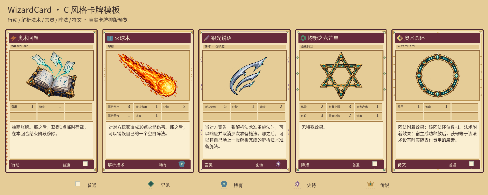
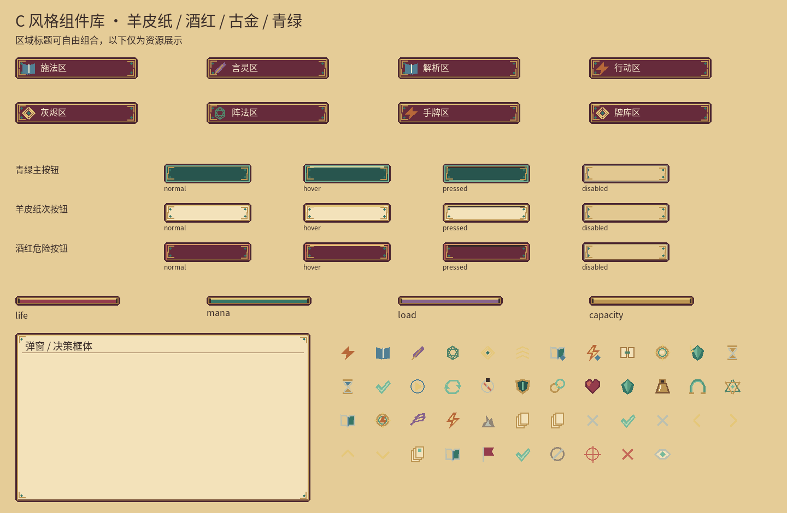
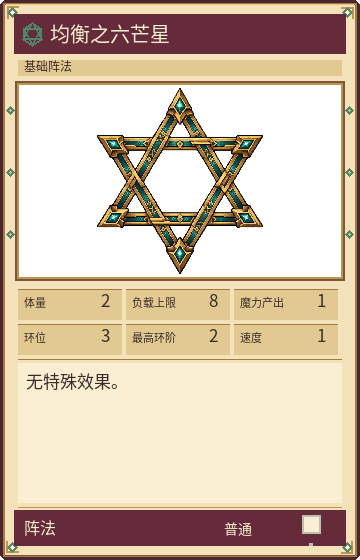
均衡之六芒星 · balance
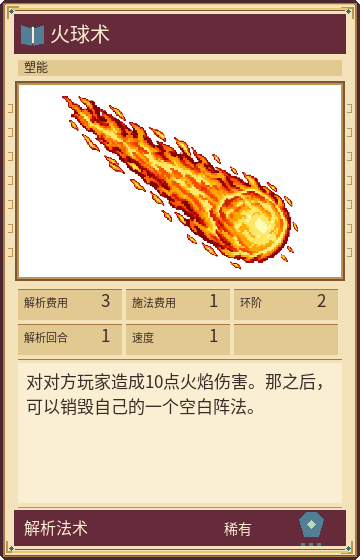
火球术 · fireball
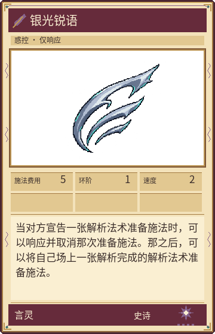
银光锐语 · barbs
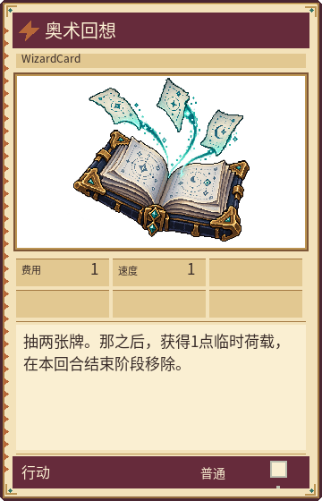
奥术回想 · recall
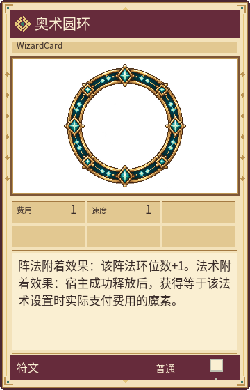
奥术圆环 · ring
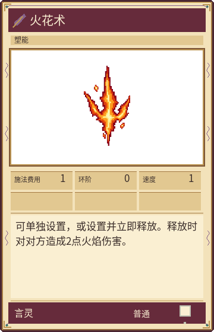
火花术 · spark
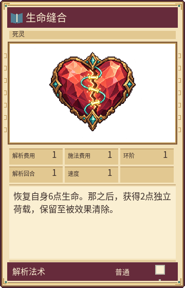
生命缝合 · mend
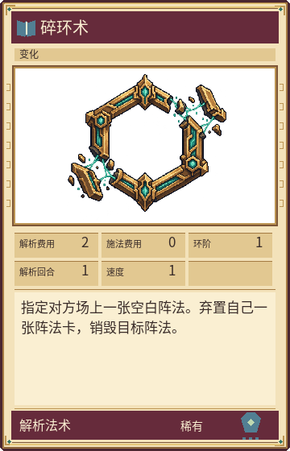
碎环术 · unravel
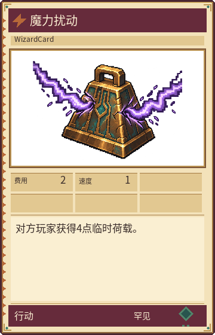
魔力扰动 · disrupt
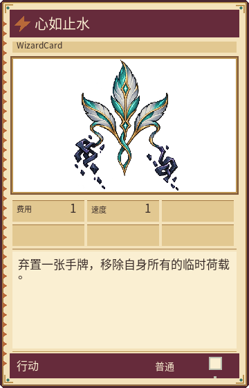
心如止水 · clarity
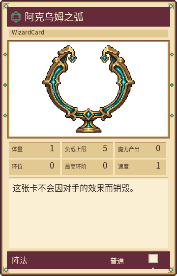
阿克乌姆之弧 · reservoir
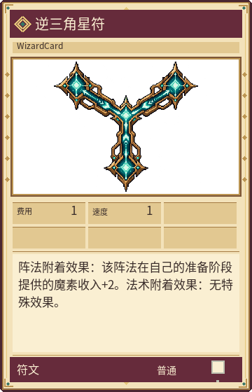
逆三角星符 · conduit
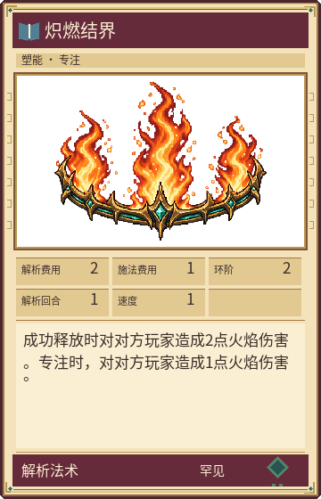
炽燃结界 · ward
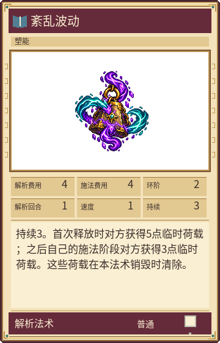
紊乱波动 · messy-wave
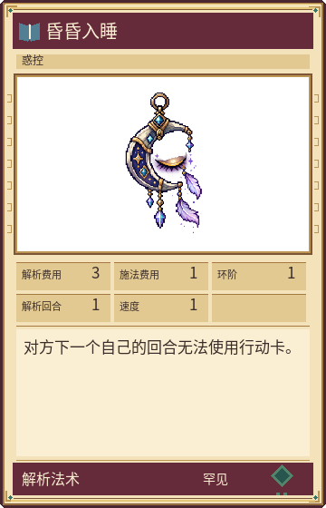
昏昏入睡 · instantly-sleep
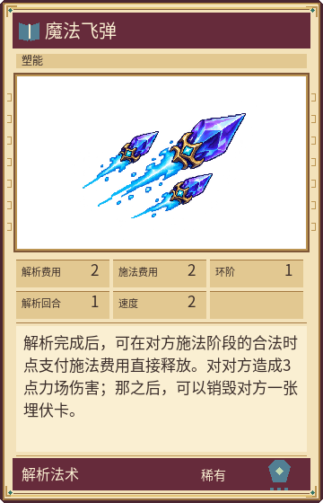
魔法飞弹 · magic-missile
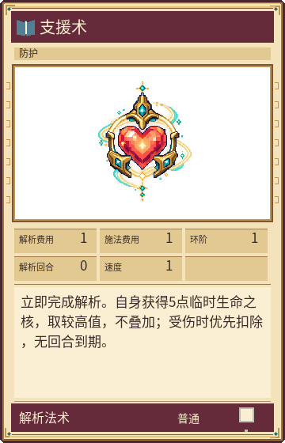
支援术 · aid
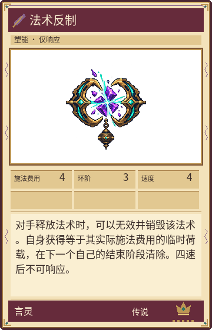
法术反制 · counter-spell
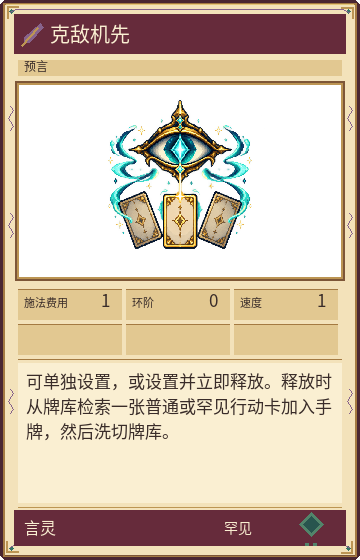
克敌机先 · true-strike
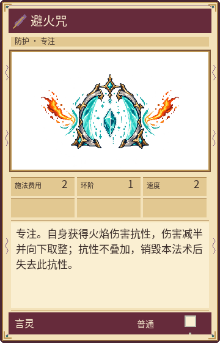
避火咒 · protective-flame
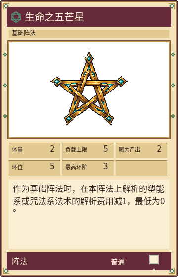
生命之五芒星 · pentagram-of-life
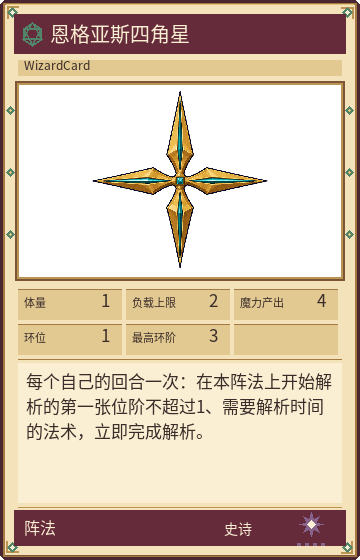
恩格亚斯四角星 · engeas-four-point-star
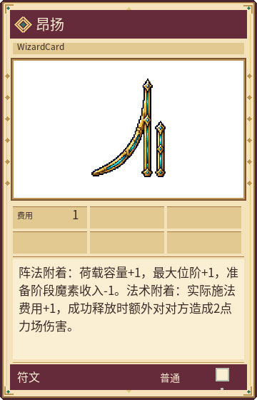
昂扬 · uplift
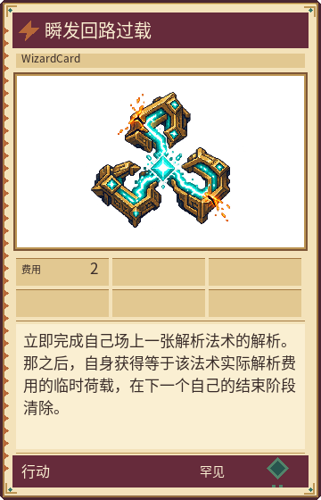
瞬发回路过载 · instant-circuit-overload
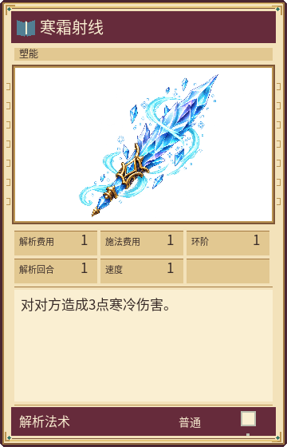
寒霜射线 · ray-of-frost
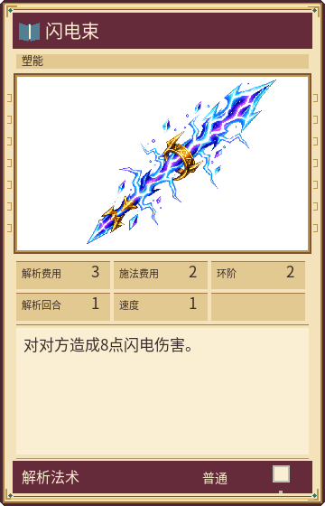
闪电束 · lightning-bolt
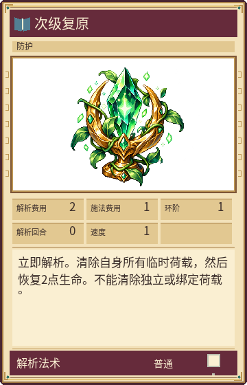
次级复原 · lesser-restoration
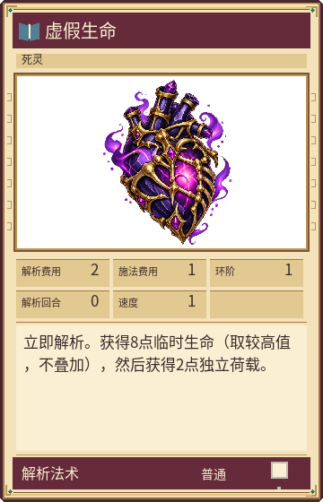
虚假生命 · false-life
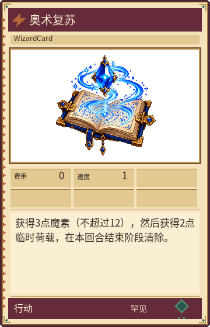
奥术复苏 · arcane-recovery
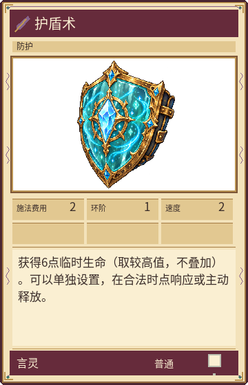
护盾术 · shield